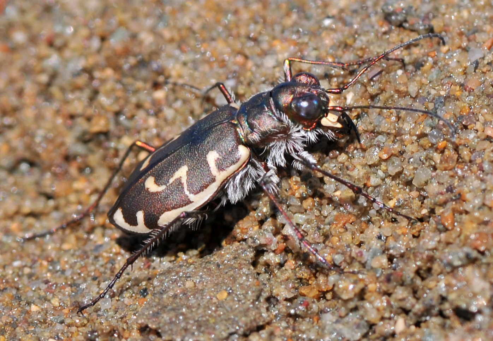
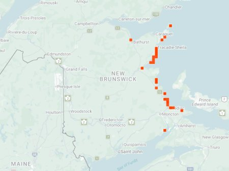

photo: Denis Doucet, Jun 21, 2012

Distribution map (based on iNaturalist observations)
Identification
- Medium-sized (12–15 mm), bronze to green with white maculations and distinctive hairy neck/pronotum.
- Metallic reflections; long legs for rapid running on sandy surfaces.
- Often found on beaches, dunes, and riverbanks.
Habitat in New Brunswick
Restricted to sandy beaches, riverbanks, and coastal dunes with open, sparsely vegetated substrates. Prefers exposed, wind-swept areas near water.
Flight Season in NB
April 22 – September 16 (spring–fall; peaks May–July).